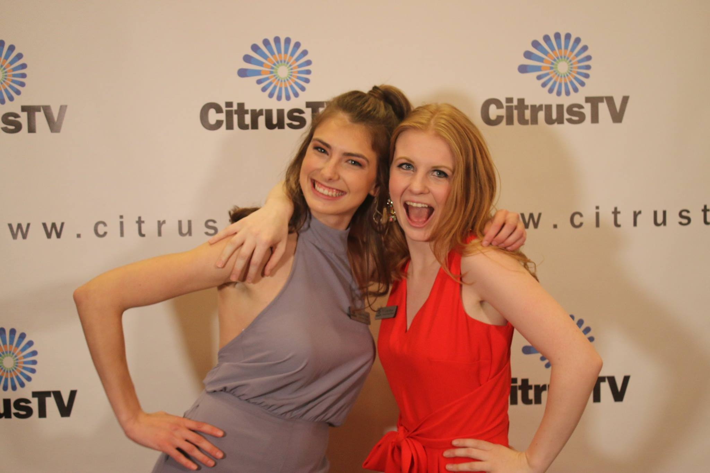
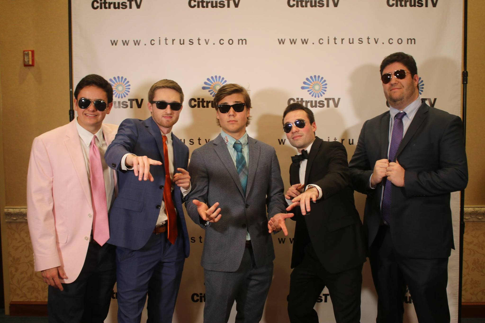
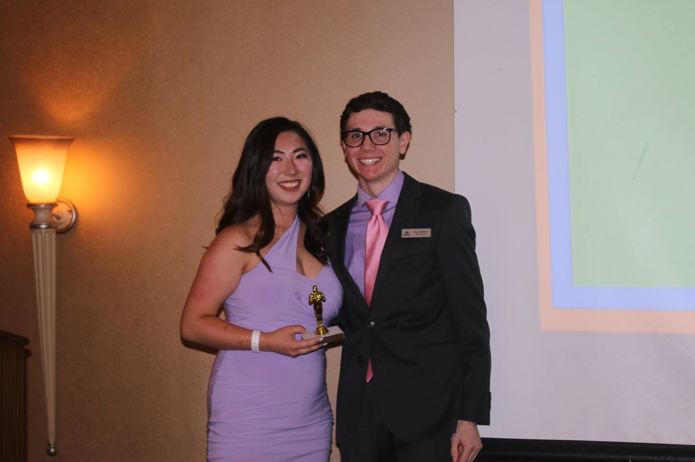

The women of the CitrusTV Executive StaffCitrusTV Freshmen attend their first banquet

Former AGM Lilia Wood celebrates with the current AGM Amber McElrath

Some CitrusTV members get ready to partyBest friends Julia and Lilly pose for the camera

News Director Greg Bradbury presents the best CitrusTV Live at 6 AwardAlex King celebrates with her mentor Toni BiancoThe former General Manager and AGM present alumi Matthew Berry with a hall of fame plaqueFreshman Liam Crowley wins Entertainment Rookie of the Year